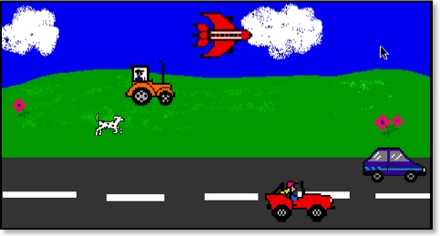

Mathland is a concept conceived by Seymour Papert. Think of it as any environment in which children are surrounded by and immersed in numbers in the same way that children in France are surrounded by French, and children in England are surrounded by English.
In France every object, organism and process has one or more French names. In England, everything has one or more English names. In mathland everything has one or more mathematical names and numbers.
We learn to think and speak in our home language automatically and without instruction by learning to associate things with their names.
Similarly, in mathland children learn to associate things with numbers. These numbers represent position, heading, speed, acceleration, and much more in ways that are thoroughly contextualised. In this way, mathematics and science become for learners second languages in which they can think almost as naturally and fluentlly as they can think in their mother tongue.
Kusasa introduces learners to a mathland called eToys, an easy-to-learn computer programming language and environment designed specifically for children.
